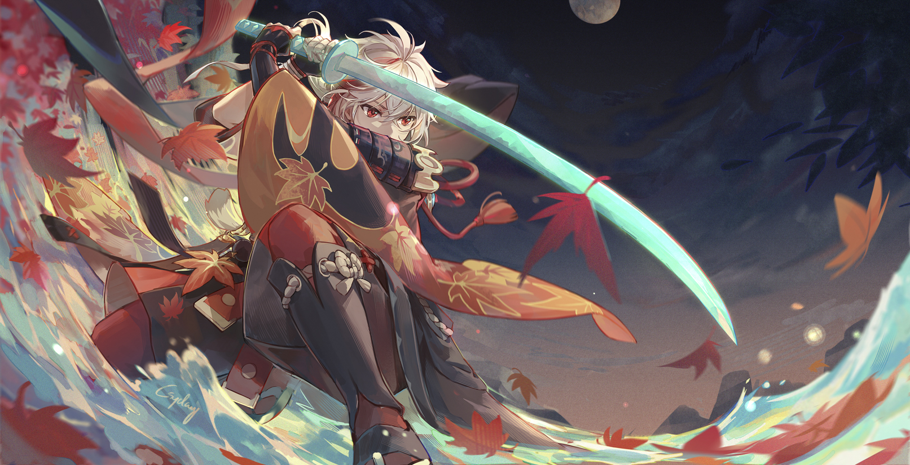

About Kazuha
A wandering samurai of the once-famed Kaedehara Clan with an ability to read the sound of nature, Kazuha is a temporary crewmember of The Crux
Kaedehara Kazuha with his katana
Kaedehara Kazuha main power
- Freedom Sworn Sword
- Elemental Mastery
- Chihayaburu
Kazuha's Friends
Kazuha had some awesome friends. His friend fought against the Vision Hunt Decree, standing up for what he beleived was right. Get to know about them by click on the links below